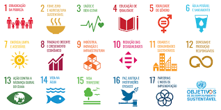

O QUE É ODS?
ODS é a sigla para os Objetivos de Desenvolvimento Sustentável que fazem parte da chamada "Agenda 2030". A agenda é composta por 17 objetivos ambiciosos e interconectados, desdobrados em 169 metas, com foco em superar os principais desafios de desenvolvimento enfrentados por pessoas no Brasil e no mundo, promovendo o crescimento sustentável global até 2030.
Quais são os ODS?
- ODS 1: Erradicação da pobreza
- ODS 2: Fome zero e agricultura sustentável
- ODS 3: Saúde e bem-estar
- ODS 4: Educação de qualidade
- ODS 5: Igualdade de gênero
- ODS 6: Água potável e saneamento
- ODS 7: Energia limpa e acessível
- ODS 8: Trabalho decente e crescimento econômico
- ODS 9: Indústria, inovação e infraestrutura
- ODS 10: Redução das desigualdades
- ODS 11: Cidades e comunidades sustentáveis
- ODS 12: Consumo e produção responsáveis
- ODS 13: Ação contra a mudança global do clima
- ODS 14: Vida na água
- ODS 15: Vida terrestre
- ODS 16: Paz, justiça e instituições
- ODS 17: Parcerias e meios de implementação